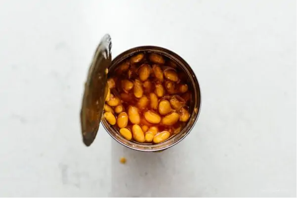
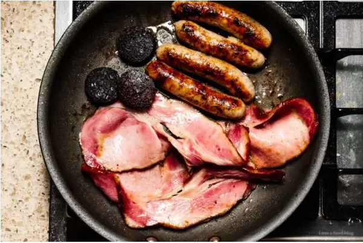
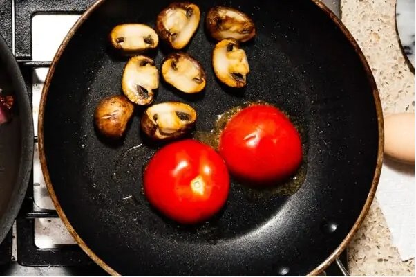
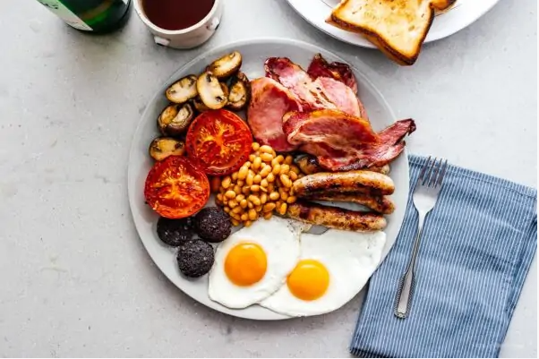

Heat up the beans over low in a small pot. Keep warm on low.

Cook the sausages over medium to medium low heat, turning occasionally,
until brown and cooked through. In the same pan, cook the bacon, flipping as needed.
Fry the blood pudding slices over medium heat for 3-4 minutes per side.

In another pan, heat up a bit of oil and cook the mushrooms, without moving, until brown and caramelized. Remove from the pan,
then sear the cut side of the tomato briefly. Remove from the pan, season everything with salt and pepper.

Wipe the pan down and heat up a bit of oil or butter over medium heat. Fry the bread until golden, flipping and adding more oil or butter as needed. Remove and set aside. Finally, fry the eggs to your liking.
Plate everything up: sausages, bacon, black pudding, mushrooms, tomato, bread, and eggs. Enjoy immediately!

Notes:
This is really more than enough food for 4 people, but nutritional info is done for the traditional full serving for 2.